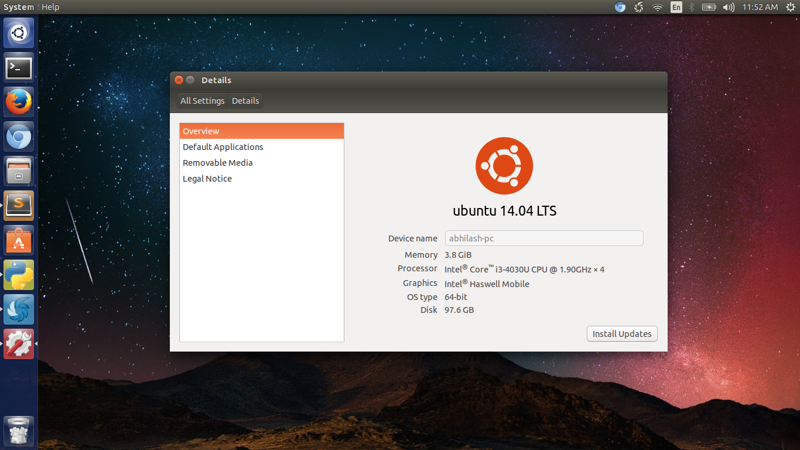
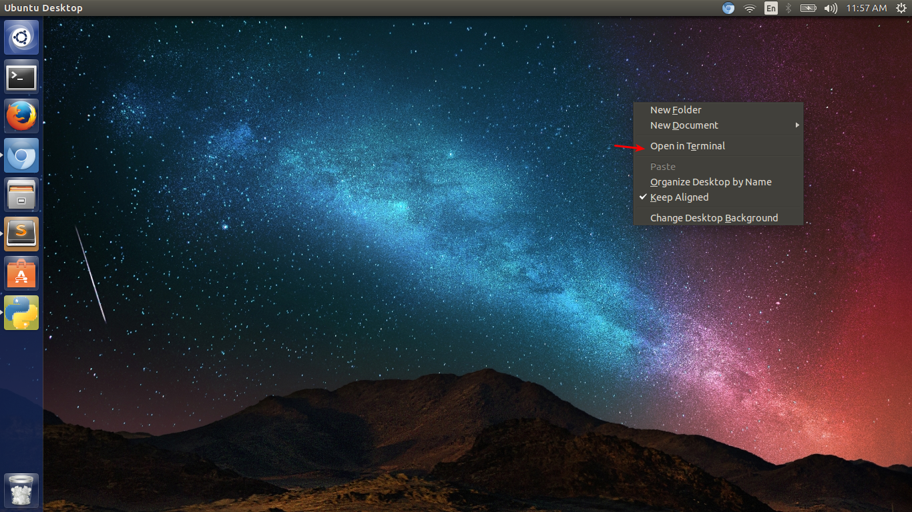
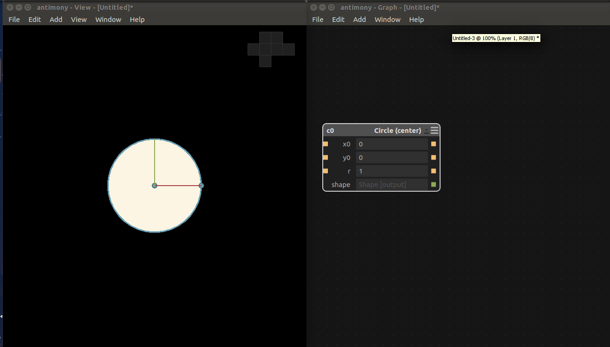
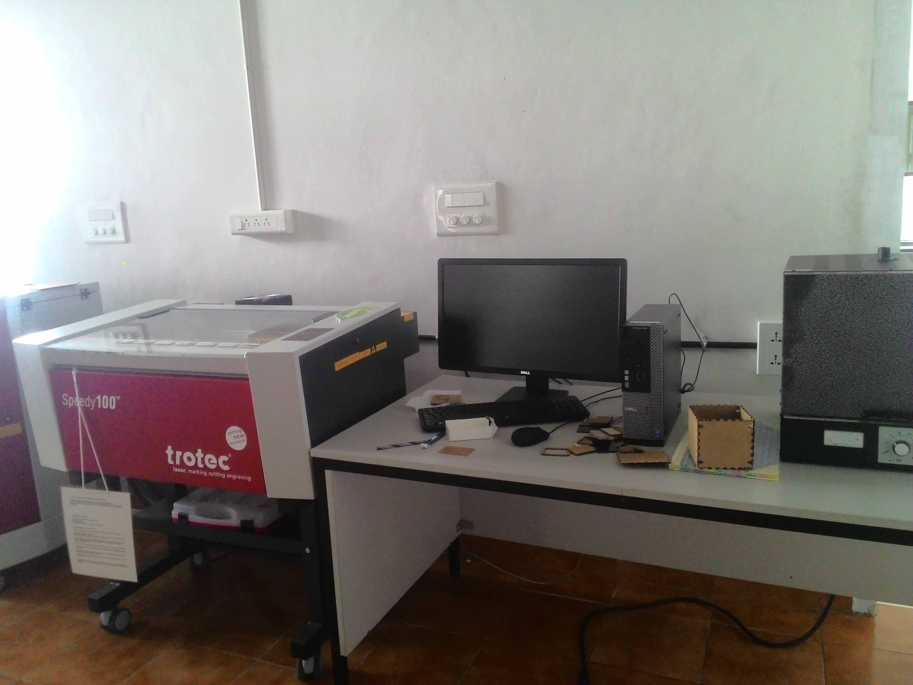
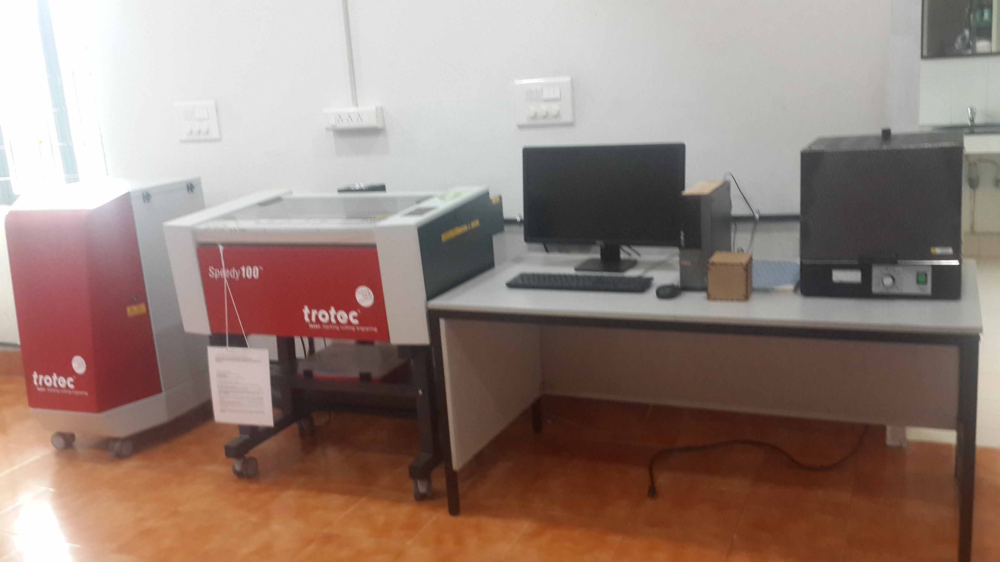
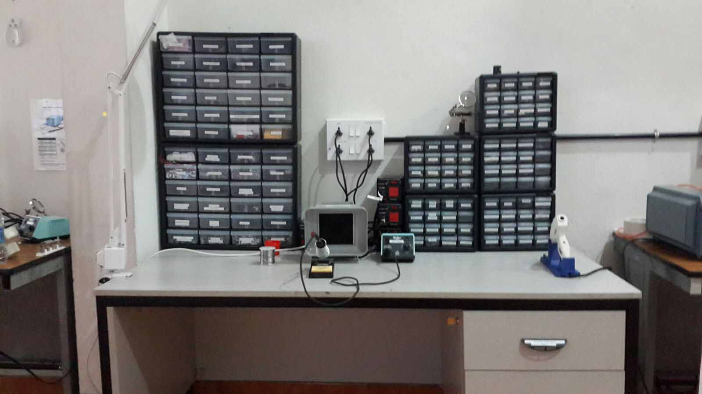

Week 1
Day 1
On the very first day of pre fab training, our instructor Francisco Sanchez Arroyo gave us an introduction about fablabs and the necessity of making things ourselves through his simple presentation. In between he shared the google drive folder for all the participants which is to be used for storing and sharing files.
He was talking about the companies which manufacture products massively of different colors and shapes since the taste of an individual cannot be separately identified which in turn results in a heap of wastage. Hw it would be that one could make almost everything that he needed by himself and thus can avoid the wastage of resources? this sounds cool right ? that's the real motive of the fablabs.
Then we discussed about the importance of pre fab training and how it will help us in fab academy . Franc then discussed about the 9 principles at MIT Media lab and gave a relaxation session ,so that we can have a fresh start.then he explained about the fab academy courses and the importance of time and effort to come out with flying colours. Franc explained us about the mailing list and things we should take care while sending mails and replies.
How to ask properly another important factor when it comes to troubleshooting and bug fixing. Usually people say it doesn't works or it gave me an error. Even if someone wants to help us they cannot do the same when we ask like that. Franc clearly explained the solution for this. Later he showed us the fab academy archives and documentations of previous students. then franc mentioned about neil, sherry and explained their tasks, roles etc. Also explained about the evaluation process and review that is going to happen on every wednesday 9 am @ Boston. He gave a clear idea on relevance of our final project also lectured us on what a good final project is. A good project must be simple,sellable and must solve some problem. I like to simplify it as 3 S . There are three types of final projects according to Franc.
- The good: Simple, well crafted
- The vague: Overcomplicated, does not solve any problem
- The bad: Poorly documented, horrible aspect
Day 2
Preparing Laptops and Lab Computers
We had to start with preparing our Laptops and Computer for using fab modules and othe software required for fab academy. For that i need to install the latest LTS version of Ubuntu which is Ubuntu LTS 14.04.
To install latest Ubuntu Desktop LTS (currently 14.04).
Formatted one of my drives and prepared the drive.It was a 100 gb drive and deleted the partiotion. Started Installation using a bootable pendrive containing Ubuntu Desktop LTS (currently 14.04). Using the disk management tool created on 50Gb partition for root and 40 gb for home and allocated the remaining for Swap Area.
(Find th Detailed Installation Guide here)
And it was completed successfully. Now my Lap is a multi booting lap with Windows 10 and Linux. I am a linux user from my school times.
Every time after the Linux installation what I do at first is customising the grub background. I hate the plain boot screen background. I don't know why. :). Here is how I changed grub Background image.
First download the required background:
and paste the image into boot/grub folder which demand superuser acces. for that type the following in terminal.
$ sudo nautilusenter password
navigate to boot/grub
Paste the image there. Again back to terminal
$ sudo update-grubThat's it!. Next time when you boot your system you can see the image you selected as your boot screen background.

Ubuntu 14.04 Desktop after sucessful Install
Next Franc showed how to install software using Ubuntu software center and how to install software using apt-get. I was familiar with those , so I started to install the required programs from the list which Franc shared.
1.Adding “Terminal here” addon for Nautilus.
Code for that.
sudo add-apt-repository universe
sudo apt-get update
sudo apt-get install nautilus-open-terminal
sudo apt-get install nautilus-actions$ sudo nautilus -qAfter that when we restarted nautilus and right clicked we had that open in terminal option.

Terminal Here Window
2. Installing fab modules compiled version
To install Fab Modules Compiled version Franc shared this url http://kokompe.cba.mit.edu/ . Procedures are as follow. Download Fab Modules zip from the link. http://kokompe.cba.mit.edu/fab_src.zip Unzip the downloaded file Install the dependencies using this single code
$ sudo apt-get install python python-wxgtk2.8 python-dev python-pip gcc g++ libpng12-dev libgif-dev make bash okular libboost-thread-dev libboost-system-dev cmake$ make fab $ sudo make install 3. Installing Kokopelli retro.
we have to install kokopelli retro for editing Neil’s circuit boards. Kokopelli is one amazing software for creating circuit boards, 2d designs.
How to install?
Download zip from this link. Unzip the folder Open folder in terminal follow the codes.
$ make fab $ cd bin$ ./kokopelli -r Kokopelli Window after sucessful Install
4. Installing Antimony
Installing Antimony is lengthy process and it consumed some time for me. First we need to install all the dependencies.Here is the whole step i followed for installing Antimony in Ubuntu 14.04.
Step 1. Install Qt :
Download Qt from here and right click on the downloaded file and set permision to run as executable file. Then double click on the file and continue the install.
Step 2.Run the following code in terminal to install other reqiured dependencies.
$ sudo apt-get install build-essential libpng-dev python3-dev libboost-all-dev libgl1-mesa-dev lemon flex
sudo add-apt-repository ppa:ubuntu-toolchain-r/test
sudo apt-get update
sudo apt-get install gcc-4.9 g++-4.9
sudo update-alternatives --install /usr/bin/gcc gcc /usr/bin/gcc-4.9 60 --slave /usr/bin/g++ g++ /usr/bin/g++-4.9
$ git clone https://github.com/mkeeter/antimony $ cd antimony $ mkdir build$ cd build $ ~/Qt/5.5/gcc_64/bin/qmake ../sb.pro$ make -j8$ sudo make install $ ./app/antimonyIf antimony crashes while trying add a component even after a successfull install. Update gcc from step 3.

Antimony Window after sucessful Install
5. Installing Installing Inkscape.
Inkscape can be directly installed from ubuntu software center
6.Installing Openscad
Directly from Ubuntu Software center
7.Installing Gimp
Directly from Ubuntu Software center
8.Installing Cura
Dowload the .deb file from Ulltimakers site and double click to install
9.Installing Arduino IDE.
Franc told to direct download Arduino IDE instead of installing from ubuntu software center. Download IDE from Arduino site and uzip the same. Open the unzipped directory and open it in terminal. type this in terminal for launching IDE
$ ./arduino10.Installing Qcad.
CAD is a free, open source 2D CAD system . Inorder to install this we need to download from their official Site. Download .run file from here and double click to install.
11.Installing Git
go to terminal. $ apt-get install git
12.Installing Eagle
EAGLE is one of many PCB CAD softwares out there. There is a free version available for Ubuntu which can be directly installed from Ubuntu Software center.
13.Installing Kicad
KiCad is an open source EDA software for Windows, OSX and Linux. Create PCB circuits for free with the most advanced features.It can be directly from Ubuntu Software center
14.Installing Wine
Directly from Ubuntu Software center
15.Text editor
I am used to Sublime text so i downloaded sublime.
Day 3
Creating accounts
On Day 3 our first task was to create the following account and write down all the links. These are recommended for fab academy so that we can organize and store our data and files and synchronize everything.
- Fablabs.io Account
- git.fabcloud.io Account
- Google account
- Youtube and/or Vimeo account
- Dropbox account
- Sketchfab.com account
Always Check your Spam folder for Confirmation mail from git.fabclouds.io.
Link to my Fab Cloud Account http://git.fabcloud.io/u/abhilashst1
Next I created Fablabs.io Account: Link https://www.fablabs.io/users/4693
Sketchfab Account :
https://sketchfab.com/abhilashst1
Creating Github Repositories
GIT is the most accomplished distributed version control system. It helps us to manage our own project locally using a version control tool or if we want modify a code that is located in a remote central GIT repository.
Installing and Configuring Git.
$sudo apt-get install git The next step is to specify your username and email address to your GIT repository using “git config” as shown below.
git config --global user.name "username"
git config --global user.email email@email.com
Verify the git configuration information as shown below.
$ git config --list
Create a repository in Github for personal website Head over to GitHub and create a new repository named username.github.io, where username is your username (or organization name) on GitHub. If the first part of the repository doesn’t exactly match your username, it won’t work, so make sure to get it right.
Clone the created repo to our PC.
$ git clone https://github.com/username/username.github.io
Move to that folder and create index.html and some content. Now we need to push this.
Add, commit, and push your changes:
$ git add --all
#adding files
$ git commit -m "Initial commit"
#Adding Comments
$ git push -u origin master
# pushing
Creating SSH Keys.
SSH keys are used to identify computers, it helps in pushing easy without passwords. Before creating one we need to check for exixting ssh key. For that type the code below in terminal.
ls -al ~/.ssh
# Lists the files in your .ssh directory, if they exist
Generate a new SSH key
With Terminal still open, copy and paste the text below.Don't forget to change the email address to your login email id for github.
ssh-keygen -t rsa -b 4096 -C "your_email@example.com"
Go with the default settings, skip paraphrase.I added a paraphrase which made my ssh configuring that not aading any advantage.So i created new ssh key withoout paraphrase and then configured it to github.
Ensure ssh-agent is enabled:
# start the ssh-agent in the background
eval "$(ssh-agent -s)"
# Agent pid 59566
Add your SSH key to the ssh-agent:
ssh-add ~/.ssh/id_rsa
Add your SSH key to your account
Copy the SSH key to your clipboard. For that type the following code in terminal.This will install xclip first and then copies the key to clipboard.
$ sudo apt-get install xclip
# Downloads and installs xclip.
xclip -sel clip < ~/.ssh/id_rsa.pub
# For copying the contents of the id_rsa.pub file to clipboard
Now login to github account from browser, navigate to account settings by click on profile photo and clicking on Settings.
On the left settings sidebar, click SSH keys.
Click Add SSH key.
Give name in the description field so that you can understand the device.
Paste key into the "Key" field.
Click Add key.
That's all folk Github is configured using ssh. Now we can push to your rep very easily.
Documenting Fab Academy and Pre Academy
Next Franc talked about the importance of documentation. According to him it's all about documentation. HE told us to tell our story in documentation not a step by step tutorial.Familiarity with HTML will help us in documenting since we need to dump all our data into an HTML website. Then he shared some links to ”learn HTML , and link to download free bootstrap templates. Also he shared the link to the grading criteria and final project requirements in Fab Academy.Link to Fab Academy 2015 Evaluation Checklist
Click Here
Fab Academy Final Project Requirements
CLick here
Photography.
Franc then told us about the importance of photography in Documentation Process. The size of the image should be in correct resolution that will not increase website loading time or reduce quality. I prefer to you 800 * 600 px images. I am familiar with photoshop so that i created a Action to resize all the images captured and screenshots to the required size. While taking images we should be careful to avoid blur.Franc told us about rule of thirds and how we should focus images and where to place images. Also we must be perfect in selecting the background for the images.We must not select very colorful background, always do minimalist and give importance to what you people to notice at first. The lighting is another important thing to take of while doing photography for documentation. If we can create the scene it will be more nice and appealing for the viewers.
Creating Mockups
Mockups are very useful for final project presentation or interface application since it can give an attractive appearance to our product. Franc shared this link where we can create Mockups .
Principles of good design
- Simplicity
- Typography
- Color harmony
Day 4
Day 4 was dedicated for cleaning and setting up lab and also for learning time management through the same. Before starting cleaning Franc gave an overview of Time management. He explained how supply and demand and linked. Later he explained about the importance of parallel development. Usually all of us go for serial development we will wait for one process to complete and do the other. Franc gave an idea of creating time slots and how to try to stick to that time slot. Also he taught us how to do things parallely which will help in rapid prototyping.
Preparing the lab
The first task was cleaning up the lab. He allotted separate sections for each of us. He said that we must stick to our section first and later finishing that we can help others. I was given the Laser Cutter section to clean up. The area where we placed Laser cutter was really messed up with a lot things that doesn't belongs to laser cutting. I started with moving things that doesn't belongs to laser cutter to their respective places. After that i moved used acrylic and cardboard to the inventory. The i arranged the Desk where computer for laser and also organised the laser cut model in a box. also cleaned the dust in the desk and below the tables.
Laser Cutter Desk before Cleaning

Laser Cutter Desk after Cleaning
Since i finished Laser section early i moved to help Varun in cleaning the inventory rack in organising Moulding and casting section and Screen Printing section. After that i helped in organising one Soldering Desk along with arranging Electronics inventory section.

Soldering and Components Desk after Cleaning